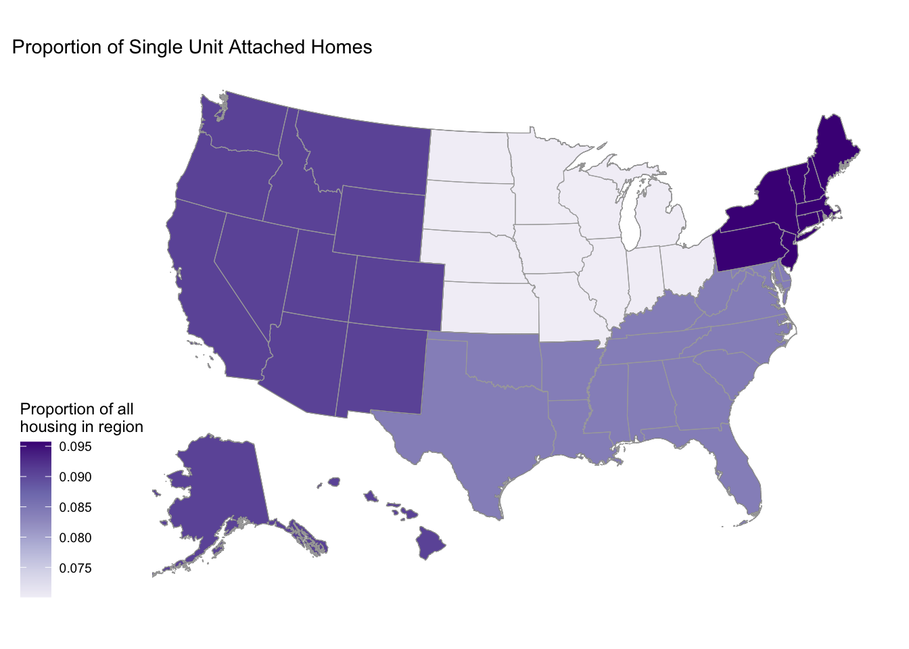
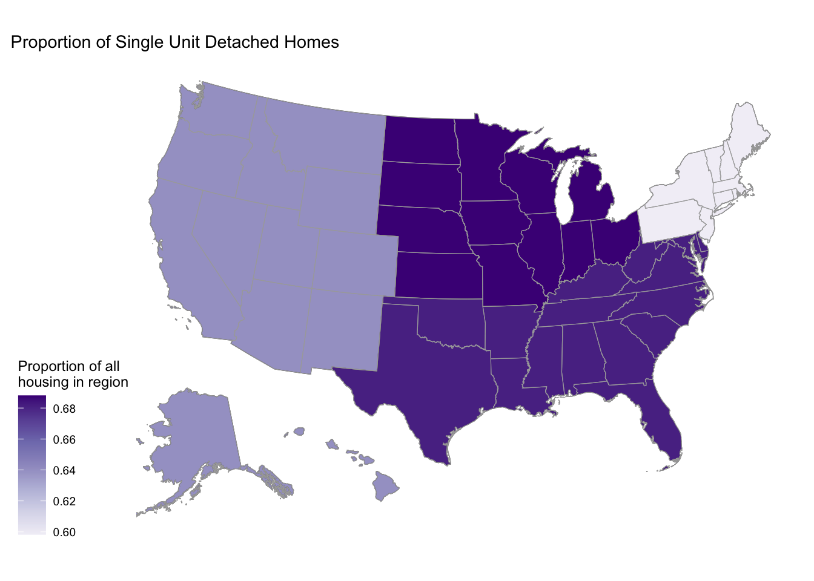
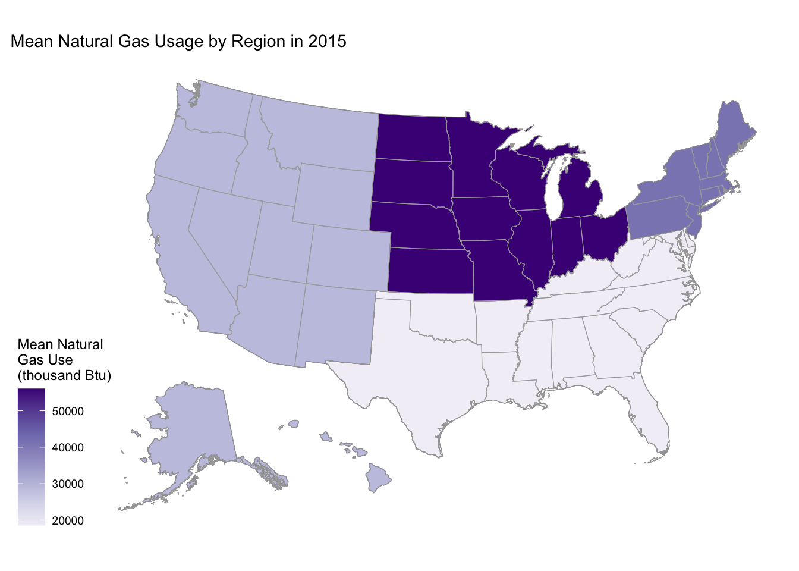

library(tidyverse)
library(sf)
library(terra)
library(tigris)
library(purrr)Building Energy Spatial Viz
recs <- readRDS("../data/recs_2015_cleaned.RDS")acs2015 <- tidycensus::get_acs(
year = 2015,
geography = "state",
variables = c("B19013_001", "B25003_001", "B25058_001", "B25003_001", "B25003_002", "B25003_003", "B25077_001", "B25105_001", "B25035_001", "B25024_001", "B25024_002", "B25024_003", "B25024_004", "B25024_005", "B25024_006", "B25024_007", "B25024_008", "B25024_009", "B25024_010"),
output = "wide",
geometry = TRUE
) %>%
rename(
"medianIncome" = "B19013_001E",
"medContractRent" = "B25058_001E",
"tenureTotal" = "B25003_001E",
"tenureOwned" = "B25003_002E",
"tenureRented" = "B25003_003E",
"medianHomeValue"= "B25077_001E",
"monthHousingCosts" = "B25105_001E",
"med_year_built" = "B25035_001E",
"total_units"= "B25024_001E",
"unit_1_detached" = "B25024_002E",
"unit_1_attached" = "B25024_003E",
"unit_2" = "B25024_004E",
"unit_3_4" = "B25024_005E",
"unit_5_9" = "B25024_006E",
"unit_10_19" = "B25024_007E",
"unit_20_49" ="B25024_008E",
"unit_50_plus" = "B25024_009E",
"mobile_home" = "B25024_010E") %>%
shift_geometry()Warning: • You have not set a Census API key. Users without a key are limited to 500
queries per day and may experience performance limitations.
ℹ For best results, get a Census API key at
http://api.census.gov/data/key_signup.html and then supply the key to the
`census_api_key()` function to use it throughout your tidycensus session.
This warning is displayed once per session.
|
| | 0%
|
|= | 1%
|
|= | 2%
|
|== | 2%
|
|== | 3%
|
|=== | 4%
|
|=== | 5%
|
|==== | 5%
|
|==== | 6%
|
|===== | 7%
|
|====== | 8%
|
|====== | 9%
|
|======= | 9%
|
|======= | 10%
|
|======== | 11%
|
|========= | 13%
|
|========== | 15%
|
|=========== | 16%
|
|============ | 17%
|
|============= | 18%
|
|============== | 20%
|
|=============== | 21%
|
|================ | 23%
|
|================= | 24%
|
|================= | 25%
|
|================== | 26%
|
|==================== | 28%
|
|===================== | 30%
|
|======================= | 33%
|
|======================== | 34%
|
|======================== | 35%
|
|============================= | 41%
|
|============================== | 43%
|
|================================ | 46%
|
|================================= | 48%
|
|=================================== | 50%
|
|===================================== | 53%
|
|====================================== | 54%
|
|======================================= | 55%
|
|======================================== | 57%
|
|========================================= | 58%
|
|========================================= | 59%
|
|=========================================== | 61%
|
|============================================= | 65%
|
|============================================== | 65%
|
|============================================== | 66%
|
|====================================================== | 77%
|
|======================================================= | 79%
|
|======================================================== | 79%
|
|========================================================= | 81%
|
|============================================================ | 85%
|
|============================================================ | 86%
|
|============================================================= | 88%
|
|================================================================= | 92%
|
|================================================================= | 93%
|
|================================================================== | 95%
|
|==================================================================== | 98%
|
|===================================================================== | 99%
|
|======================================================================| 100%acs2015_agg <- acs2015 %>%
mutate(units_2_4 = unit_2 + unit_3_4,
units_5_plus = unit_5_9 + unit_10_19 + unit_20_49 + unit_50_plus) %>%
filter(NAME != "Puerto Rico")
acs2015_region <- acs2015_agg %>%
mutate(region = case_when(
NAME %in% c("Connecticut", "Maine", "Massachusetts", "New Hampshire", "Rhode Island", "Vermont", "New Jersey", "New York", "Pennsylvania") ~ "Northeast",
NAME %in% c("Illinois", "Indiana", "Michigan", "Ohio", "Wisconsin", "Iowa", "Kansas", "Minnesota", "Missouri", "Nebraska", "North Dakota", "South Dakota") ~ "Midwest",
NAME %in% c("Delaware", "Florida", "Georgia", "Maryland", "North Carolina", "South Carolina", "Virginia", "District of Columbia", "West Virginia", "Alabama", "Kentucky", "Mississippi", "Tennessee", "Arkansas", "Louisiana", "Oklahoma", "Texas") ~ "South",
NAME %in% c("Arizona", "Colorado", "Idaho", "Montana", "Nevada", "New Mexico", "Utah", "Wyoming", "Alaska", "California", "Hawaii", "Oregon","Washington") ~ "West",
))
centers <- st_centroid(acs2015_agg, of_largest_polygon = TRUE)Warning: st_centroid assumes attributes are constant over geometriesggplot() +
geom_sf(data = acs2015, aes(fill = med_year_built)) +
scale_fill_distiller(palette = "Greens",
direction = 1) +
labs(title = "Median Year House Was Built by State, 2011-2015",
caption = "Data source: 2011-2015 5-year ACS, US Census Bureau",
fill = "ACS estimate") +
ggthemes::theme_map()
ggplot() +
geom_sf(data = acs2015_agg, aes(fill = unit_1_attached/total_units)) +
scale_fill_distiller(palette = "Purples",
direction = 1) +
labs(title = "Proportion of Single Unit Attached Homes, 2011-2015",
caption = "Data source: 2011-2015 5-year ACS, US Census Bureau",
fill = "ACS estimate") +
ggthemes::theme_map()
ggplot() +
geom_sf(data = acs2015_agg, aes(fill = unit_1_detached/total_units)) +
scale_fill_distiller(palette = "Purples",
direction = 1) +
labs(title = "Proportion of Single Unit Detached Homes, 2011-2015",
caption = "Data source: 2011-2015 5-year ACS, US Census Bureau",
fill = "ACS estimate") +
ggthemes::theme_map()
ggplot() +
geom_sf(data = acs2015_agg, aes(fill = units_2_4/total_units)) +
scale_fill_distiller(palette = "Purples",
direction = 1) +
labs(title = "Proportion of 2-4 Unit Homes, 2011-2015",
caption = "Data source: 2011-2015 5-year ACS, US Census Bureau",
fill = "ACS estimate") +
ggthemes::theme_map()
ggplot() +
geom_sf(data = acs2015_agg, aes(fill = units_5_plus/total_units)) +
scale_fill_distiller(palette = "Purples",
direction = 1) +
labs(title = "Proportion of 5+ Unit Homes, 2011-2015",
caption = "Data source: 2011-2015 5-year ACS, US Census Bureau",
fill = "ACS estimate") +
ggthemes::theme_map()
#What's the distribution of owners versus renters?
ggplot() +
geom_sf(data = acs2015_agg, aes(fill = tenureOwned/tenureTotal)) +
scale_fill_distiller(palette = "Greens",
direction = 1) +
labs(title = "Proportion Owning",
caption = "Data source: 2011-2015 5-year ACS, US Census Bureau",
fill = "ACS estimate") +
ggthemes::theme_map()
ggplot() +
geom_sf(data = acs2015_agg, aes(fill = tenureRented/tenureTotal)) +
scale_fill_distiller(palette = "Greens",
direction = 1) +
labs(title = "Proportion Owning",
caption = "Data source: 2011-2015 5-year ACS, US Census Bureau",
fill = "ACS estimate") +
ggthemes::theme_map()
#What's the median age of buildings by state?
ggplot() +
geom_sf(data = acs2015_agg, aes(fill = med_year_built)) +
scale_fill_distiller(palette = "Greens",
direction = -1) +
labs(title = "Median Building Age, 2011-2015",
caption = "Data source: 2011-2015 5-year ACS, US Census Bureau",
fill = "Median Year Built") +
ggthemes::theme_map()
recs <- readRDS("../data/recs_2015_cleaned.RDS")recs_housing_type <- recs %>%
count(region_name, housing_type)
region_means <- acs2015_region %>%
group_by(region) %>%
select(-GEOID, -NAME) %>%
summarise_all(mean)Warning: There were 4 warnings in `summarise()`.
The first warning was:
ℹ In argument: `geometry = (new("standardGeneric", .Data = function (x, ...)
...`.
ℹ In group 1: `region = "Midwest"`.
Caused by warning in `mean.default()`:
! argument is not numeric or logical: returning NA
ℹ Run `dplyr::last_dplyr_warnings()` to see the 3 remaining warnings.region_geometry <- region_means %>%
select(region, geometry)
recs_housing_spatial <- region_geometry %>%
left_join(recs_housing_type, join_by(region == region_name)) %>%
group_by(region) %>%
mutate(totalHousing = sum(n),
typeProportion = n/totalHousing)What is the RECS distribution of types of housing by region?
recs_housing_spatial %>%
filter(housing_type == "Single family attached") %>%
ggplot() +
geom_sf(aes(fill = typeProportion)) +
scale_fill_distiller(palette = "Purples",
direction = 1) +
geom_sf(data = acs2015_agg, color = "darkgray", fill = NA) +
labs(title = "Proportion of Single Unit Attached Homes") +
ggthemes::theme_map()
recs_housing_spatial %>%
filter(housing_type == "Single family detached") %>%
ggplot() +
geom_sf(aes(fill = typeProportion)) +
scale_fill_distiller(palette = "Purples",
direction = 1) +
geom_sf(data = acs2015_agg, color = "darkgray", fill = NA) +
labs(title = "Proportion of Single Unit Detached Homes") +
ggthemes::theme_map()
recs_housing_spatial %>%
filter(housing_type == "Apt small building") %>%
ggplot() +
geom_sf(aes(fill = typeProportion)) +
scale_fill_distiller(palette = "Purples",
direction = 1) +
geom_sf(data = acs2015_agg, color = "darkgray", fill = NA) +
labs(title = "Proportion of 2-4 Unit Homes by Region",
fill = "Propotion of all housing in region") +
ggthemes::theme_map()recs_housing_spatial %>%
filter(housing_type == "Apt large building") %>%
ggplot() +
geom_sf(aes(fill = typeProportion)) +
scale_fill_distiller(palette = "Purples",
direction = 1) +
geom_sf(data = acs2015_agg, color = "darkgray", fill = NA) +
labs(title = "Proportion of 5+ Unit Homes",
fill = "Propotion of all housing in region") +
ggthemes::theme_map()<<<<<<< HEAD Single-unit detached homes dominate by region, although less so in New England, likely due to the presence of more compact cities like New York City. Single-unit attached and small apartments make up relatively larger proportions in New England, although are less common overall. Large apartments are common in New England and, interestingly, also the West- perhaps due to compact cities in California? =======
recs_temp <- recs %>%
count(region_name, elec_warm, elec_cool) %>%
mutate(
# elec = case_when(
# elec_cool =="Yes" & elec_warm == "Yes" ~ "Both",
# elec_cool =="No" & elec_warm == "Yes" ~ "Just Warming",
# elec_cool =="Yes" & elec_warm == "No" ~ "Just Cooling",
# elec_cool =="No" & elec_warm == "No" ~ "Neither"
# )
)What is the ACS estimate for distribution of housing type by state?
ggplot() +
geom_sf(data = acs2015_agg, aes(fill = unit_1_attached/total_units)) +
scale_fill_distiller(palette = "Purples",
direction = 1) +
labs(title = "Proportion of Single Unit Attached Homes, 2011-2015",
caption = "Data source: 2011-2015 5-year ACS, US Census Bureau",
fill = "ACS estimate") +
ggthemes::theme_map()
ggplot() +
geom_sf(data = acs2015_agg, aes(fill = unit_1_detached/total_units)) +
scale_fill_distiller(palette = "Purples",
direction = 1) +
labs(title = "Proportion of Single Unit Detached Homes, 2011-2015",
caption = "Data source: 2011-2015 5-year ACS, US Census Bureau",
fill = "ACS estimate") +
ggthemes::theme_map()
ggplot() +
geom_sf(data = acs2015_agg, aes(fill = units_2_4/total_units)) +
scale_fill_distiller(palette = "Purples",
direction = 1) +
labs(title = "Proportion of 2-4 Unit Homes, 2011-2015",
caption = "Data source: 2011-2015 5-year ACS, US Census Bureau",
fill = "ACS estimate") +
ggthemes::theme_map()
ggplot() +
geom_sf(data = acs2015_agg, aes(fill = units_5_plus/total_units)) +
scale_fill_distiller(palette = "Purples",
direction = 1) +
labs(title = "Proportion of 5+ Unit Homes, 2011-2015",
caption = "Data source: 2011-2015 5-year ACS, US Census Bureau",
fill = "ACS estimate") +
ggthemes::theme_map()
Single unit houses, unsuprisingly, also dominate by state. They seem least prevalent in New York and Massachusets, and make up a somewhat lower proportion in Illinois, California, Nevada, and North Dakota. Pennsylvania and Maryland contain an intriguingly high proportion of single-unit attached houses. Over a fifth of Rhode Island’s housing is small apartments; New York, Connecticut, and New Jersey also have high proportions. Although not visible, around half of D.C.’s housing is large apartments, followed by New York, supporting the idea that cities tend to contain larger unit housing.
Who rents vs owns by state?
ggplot() +
geom_sf(data = acs2015_agg, aes(fill = tenureOwned/tenureTotal)) +
scale_fill_distiller(palette = "Greens",
direction = 1) +
labs(title = "Who Owns Housing?",
caption = "Data source: 2011-2015 5-year ACS, US Census Bureau",
fill = "Proportion \nOwning") +
ggthemes::theme_map()ggplot() +
geom_sf(data = acs2015_agg, aes(fill = tenureRented/tenureTotal)) +
scale_fill_distiller(palette = "Greens",
direction = 1) +
labs(title = "Who Rents Housing?",
caption = "Data source: 2011-2015 5-year ACS, US Census Bureau",
fill = "Proportion \nRenting") +
ggthemes::theme_map()Generally, owning is more common then renting. The exceptions to this rule are New York, Calfornia, and Nevada- states with big cities.
#What’s the median age of buildings by state?
ggplot() +
geom_sf(data = acs2015_agg, aes(fill = med_year_built)) +
scale_fill_distiller(palette = "BuPu",
direction = -1) +
labs(title = "Median Building Age, 2011-2015",
caption = "Data source: 2011-2015 5-year ACS, US Census Bureau",
fill = "Median Year Built") +
ggthemes::theme_map()# Midwest, NE buildings tend to be olderNevada has the newest buildings. Houses in the South and West generally tend to be newer. Houses in New York are oldest, along with several states in New England and the Midwest= notable Illinois, Iowa, and Ohio.
# Add geometry to a summary of a RECS variable and map it
map_recs_var <- function(var, df, title, legend_title, palette) {
data_geom <- region_geometry %>%
left_join(df, join_by(region == region_name))
ggplot() +
geom_sf(data = data_geom, aes(fill = {{var}})) +
scale_fill_distiller(palette = palette,
direction = 1) +
geom_sf(data = acs2015_agg,
color = "darkgray",
fill = NA) +
labs(title = title,
fill = legend_title) +
ggthemes::theme_map()
}What regions’ houses have air conditioning?
recs_aircon <- recs %>%
count(region_name, aircon) %>%
group_by(region_name) %>%
mutate(total = sum(n),
proportion_aircon = n / total) %>%
filter(aircon == "Yes")
aircon_choropleth <- map_recs_var(
proportion_aircon,
recs_aircon,
"Proportion of Homes with Air Conditioning",
"Propotion",
"Blues"
)
aircon_choroplethAir conditioning is nearly universal in the South, and is almost as common in the Midwest. Its prevalence drops to around 80% in New England, and down to 75% in the West.
Which regions use more electricity?
recs_btu <- recs %>%
group_by(region_name) %>%
summarise(mean_btu = mean(BTUEL))
btu_choropleth <- map_recs_var(
mean_btu,
recs_btu,
"Mean Electrity Usage by Region in 2015",
"Mean Electricity \nUse (thousand \nBtu)",
"Purples"
)
btu_choropleth
The South uses noticeably more air conditioning than other regions.
What about natural gas?
recs_btn <-recs %>%
group_by(region_name) %>%
summarise(mean_btn = mean(BTUNG))
btn_choropleth <- map_recs_var(
mean_btn,
recs_btn,
"Mean Natural Gas Usage by Region in 2015",
"Mean Natural \nGas Use\n(thousand Btu)",
"Oranges"
)
btn_choroplethThe Midwest uses notably more natural gas than other regions, followed by New England and the West.
<<<<<<< HEAD
Multivariate Analysis
btn_choropleth +
geom_sf(data = centers, aes(size = med_year_built), color = "red") +
scale_size(range = c(.5, 6)) +
labs(size = "Median Year Built")
recs_sqft <- recs %>%
group_by(region_name) %>%
summarise(mean_sqft = mean(TOTSQFT_EN))
sqft_choropleth <- map_recs_var(
mean_sqft,
recs_sqft,
"Median Building Age and Square Footage by Region in 2015",
"Mean Square Feet",
"Purples"
)
sqft_choroplethsqft_choropleth +
geom_sf(data = centers, aes(size = med_year_built), color = "blue") +
scale_size(range = c(.5, 6)) +
labs(size = "Median Year Built")